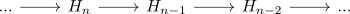
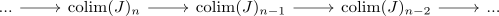
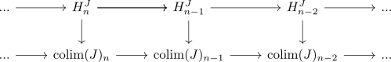
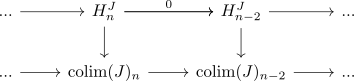

limit of chain complexes
Proposition
Let $\mathcal{C}$ be a pointed category and $\mathrm{Ch_*}(\mathcal{C})$ the category of chain complexes. Suppose there exists a diagram $J: \mathcal{J} \rightarrow \mathrm{Ch_*}(\mathcal{C})$ and all limits $\mathrm{lim}_{J_n}$, then a limit of the chain complexes is given by
see: lim
Proof
special case
empty diagram, here the zero chain satisfies the requirements todo
construction
Consider a chain complex as diagram

Thus we get \(J\)-shaped diagrams
obtained by postcomposition with n-th component functor of chain complexes.
By commutativity of chain maps, we obtain natural transformations from the boundary maps $(d_n): (J_n) \rightarrow (J_{n-1})$
Hence taking the lim functor results in a diagram

It remains to show, that this is a valid chain complex. Choose an indexed chain complex $H^j$.
Then we get a commutative diagram

and by boundary condition a zero morphism

Note that $0: \mathrm{colim}(J)_n \rightarrow \mathrm{colim}(J)_{n-2}$ makes the diagram commute, hence, since the morphism is induced by the universal property (cf. limit), we conclude, that $0$ is also the morphism in the bottom half